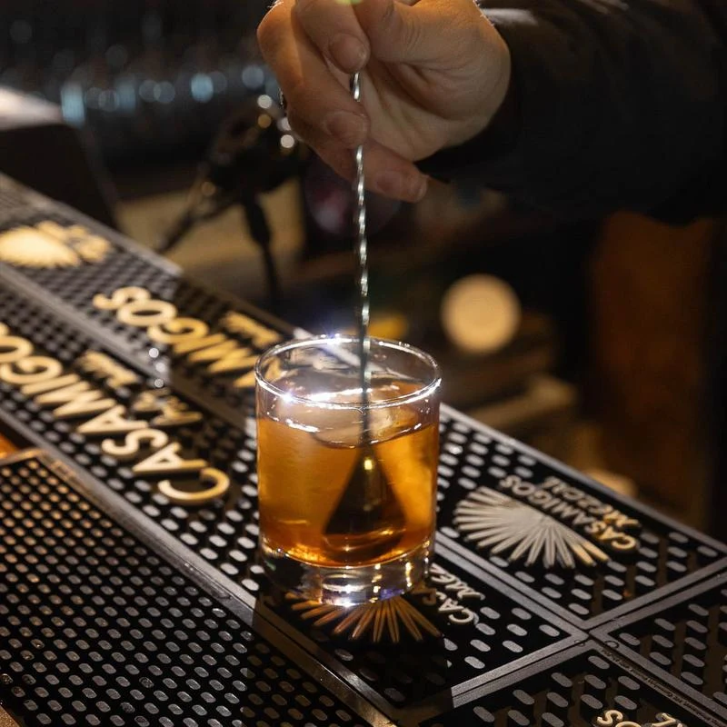
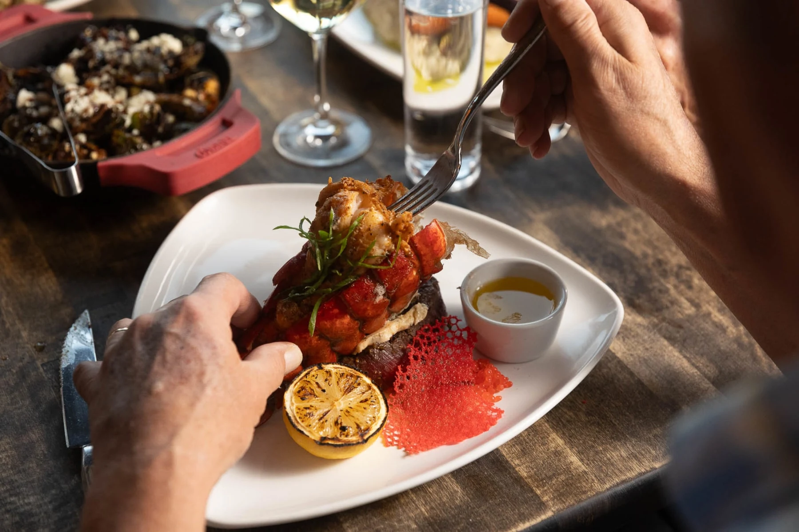
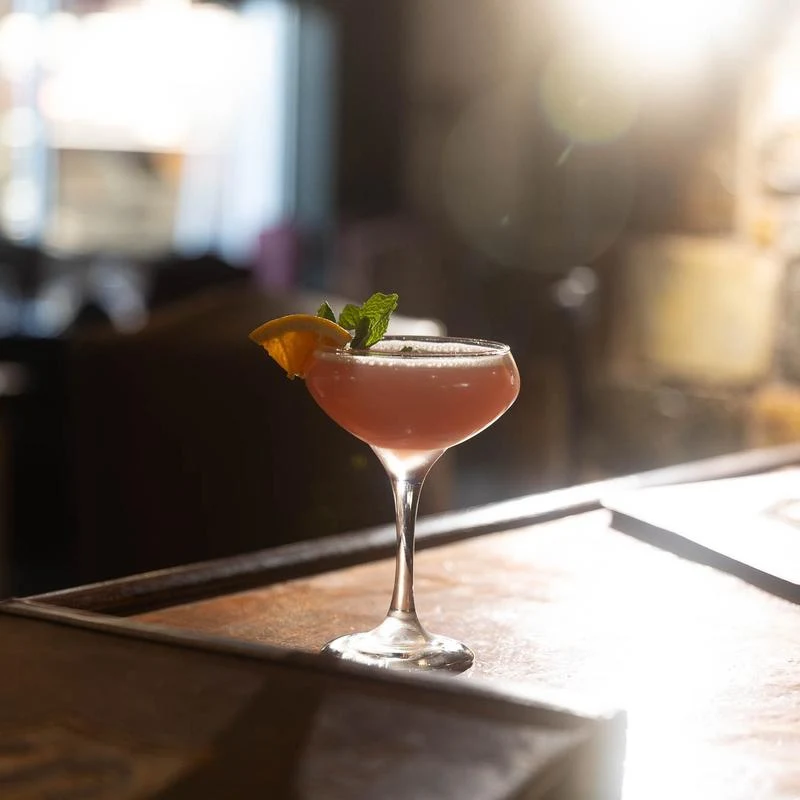
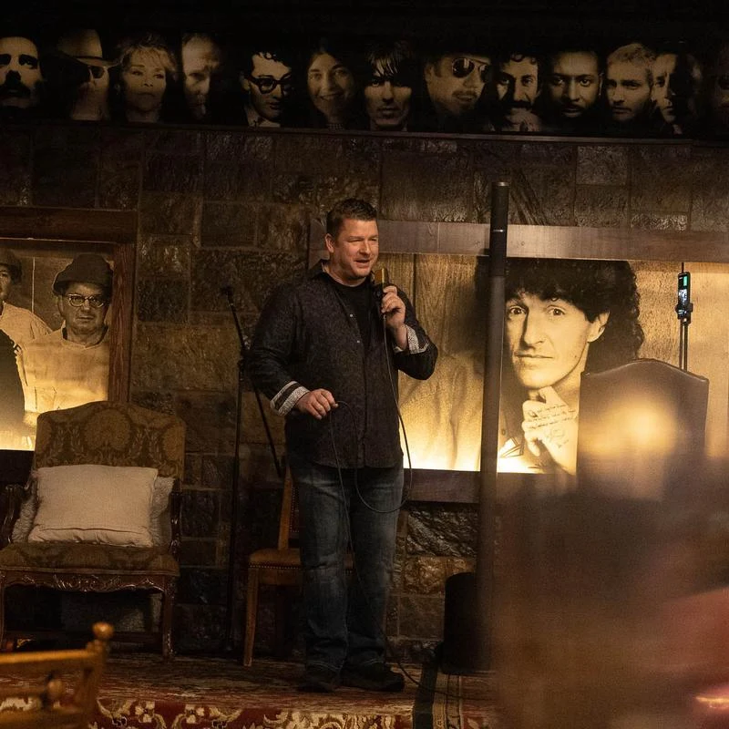
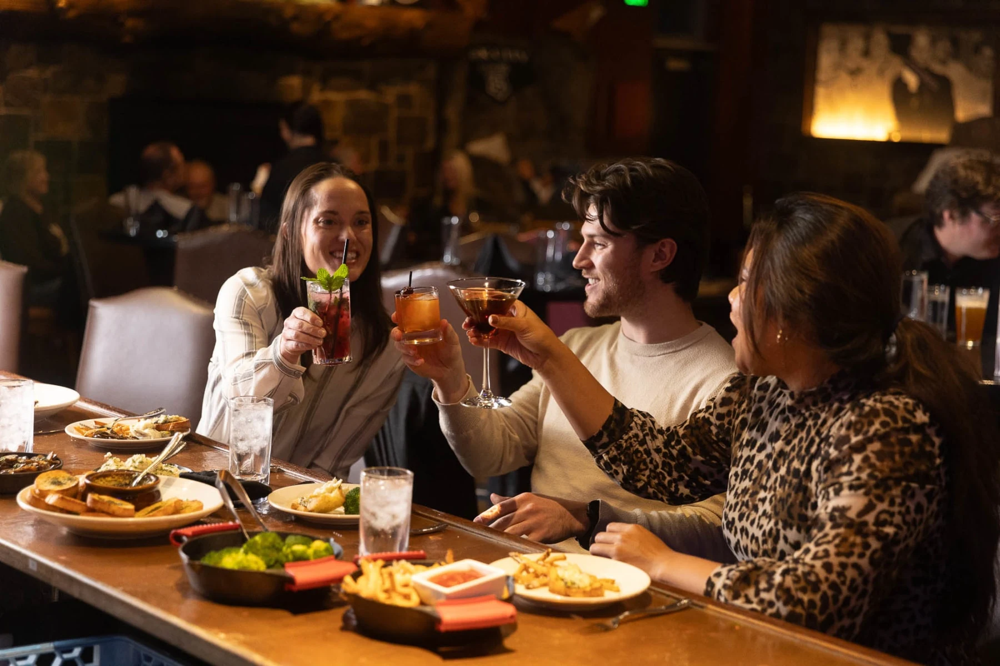
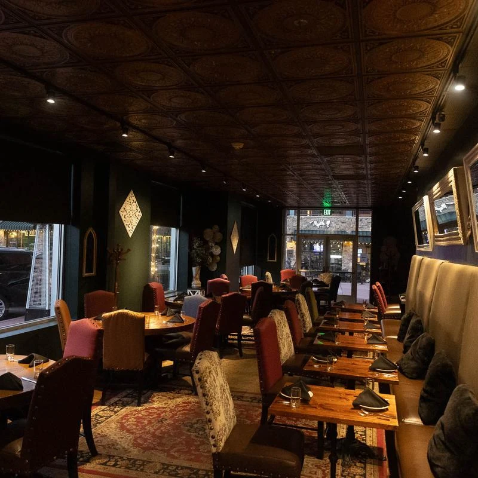

Steak, cocktails & live music
in Park City.
Sterling
Kimball Junction, Utah

A seat at the bar.
A little more time.
Settle in for steak and stay for the music. That’s an evening at Sterling, in Kimball Junction.
Settle into the lounge, gather around the table, and make an evening of it.
Find your way hereYour kind of evening

Start with steak
Rib eye, filet mignon, and weekend prime rib. Find your cut, then make it your evening.
Rib eye, 14 oz $78
Explore the menuStay for the music
Dinner has a soundtrack here. Come for a meal, settle in with a cocktail, and enjoy Sterling’s live-music atmosphere.
Call for the lineup
Explore the drinks
A look around
Inside Sterling
Steak, cocktails, the room, and the moments in between. Take a closer look at an evening here.
Your people.
Your occasion.
A birthday dinner, an anniversary, a room full of friends. Make your next gathering a Sterling evening.

275
Maximum guests
for private gatherings
Tell us the occasion and the size of your group. We’ll help you plan the rest.

Come on in
1242 Center Drive, unit 1Park City, UT 84098